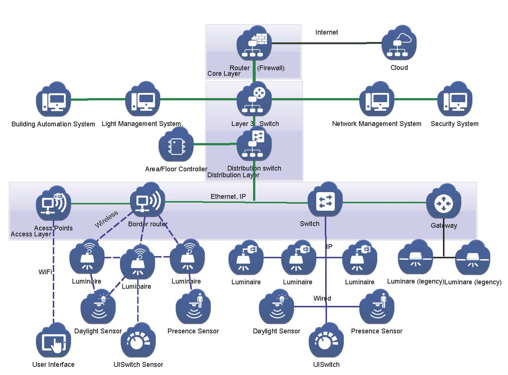

|  |
Open Architectures for Intelligent Solid State Lighting Systems (OpenAIS)
- 2016 - 2017, Funded by: H2020.
- OpenAIS is defined as "an open system architecture for the inclusion of lighting for professional applications into IoT, with a focus on office lighting. This enables a transition from the currently existing closed and command-oriented lighting control systems to an open and service-oriented system architecture".
- My responsibilities:
- Design routing protocols for indoor lighting systems.
- Design solutions for communication flow management in wireless mesh networks.
- Partners: Eindhoven University of Technology, Signify (Philips Lighting), NXP, ARM, Tridonic, TNO ESI, Zumtobel, Dynniq, Johnson Controls.
|